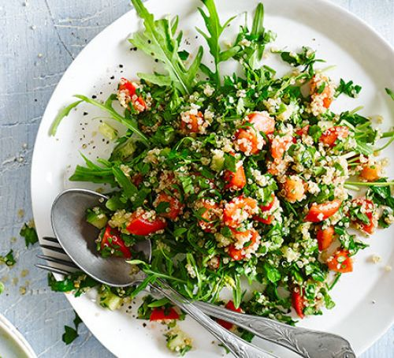

Egg & rocket pizzas

Steak, roasted pepper & pearl barley salad

Quinoa tabbouleh

Asparagus & new potato frittata
| The recipe | Ingredients: | Method |
|---|---|---|
| Egg & rocket pizzas | 2 seeded wraps a little olive oil, for brushing 1 roasted red pepper, from a jar 2 tomatoes 2 tbsp tomato purée 1 tbsp chopped dill 2 tbsp chopped parsley 2 eggs 65g pack rocket ½ red onion, very thinly sliced | 1.Heat oven to 200C/180C fan/gas 6. Lay the tortillas on two baking sheets, brush sparingly with the oil then bake for 3 mins. Meanwhile chop the pepper and tomatoes and mix with the tomato purée, seasoning and herbs. Turn the tortillas over and spread with the tomato mixture, leaving the centre free from any large pieces of pepper or tomato. 2.Break an egg into the centre then return to the oven for 10 mins or until the egg is just set and the tortilla is crispy round the edges. Serve scattered with the rocket and onion. |
| Steak, roasted pepper & pearl barley salad | 85g pearl barley, rinsed 1 red pepper, deseeded and cut into strips 1 yellow pepper, deseeded and cut into strips 1 red onion, cut into 8 wedges, leaving root intact 1 tbsp olive oil, plus a little extra 1 large lean steak, around 300g, trimmed of any excess fat ½ x 100g bag watercress, roughly chopped | 1.Put the pearl barley in a large pan of water. Bring to the boil and cook vigorously for 25-30 mins or until tender. Drain thoroughly and transfer to a bowl. 2.Meanwhile, heat oven to 200C/ 180C fan/gas 6. Put the peppers on a baking tray with the onion wedges, toss in 1 tbsp olive oil and roast for about 20 mins until tender. 3.While the peppers are roasting, rub the steak with a little bit of oil and season. Cook in a non-stick frying pan for 3-4 mins each side, or to your liking. Set aside to rest for a few mins. Mix the cooked peppers and onions into the barley. Stir though the watercress, lemon juice and some seasoning. Thinly slice the steaks, place on top of the salad and serve with lemon wedges, if you like |
| Quinoa tabbouleh | 200g quinoa juice 1-2 lemons 4 tbsp olive oil small bunch mint, chopped small bunch flat-leaf parsley, chopped bunch spring onions, sliced ½ cucumber, deseeded and diced handful walnuts, chopped | Rinse the quinoa well and place in a pan with about double the volume of water. Bring to the boil, cover, reduce the heat and gently simmer for 10 mins or until the grain unwraps itself. Turn off the heat and leave to cool slightly, then drain any remaining water. Season the quinoa, stir in the lemon juice and oil and leave to cool fully. Stir in the other ingredients, then serve |
| Asparagus & new potato frittata | 200g new potatoes, quartered 100g asparagus tips 1 tbsp olive oil 1 onion, finely chopped 6 eggs, beaten 40g cheddar, grated rocket or mixed leaves, to serve | 1. Heat the grill to high. Put the potatoes in a pan of cold salted water and bring to the boil. Once boiling, cook for 4-5 mins until nearly tender, then add the asparagus for a final 1 min. Drain. 2. Meanwhile, heat the oil in an ovenproof frying pan and add the onion. Cook for about 8 mins until softened. 3. Mix the eggs with half the cheese in a jug and season well. Pour over the onion in the pan, then scatter over the asparagus and potatoes. Top with the remaining cheese and put under the grill for 5 mins or until golden and cooked through. Cut into wedges and serve from the pan with salad. |